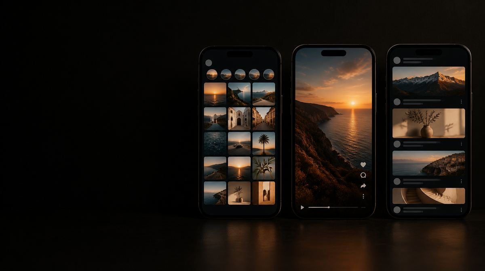
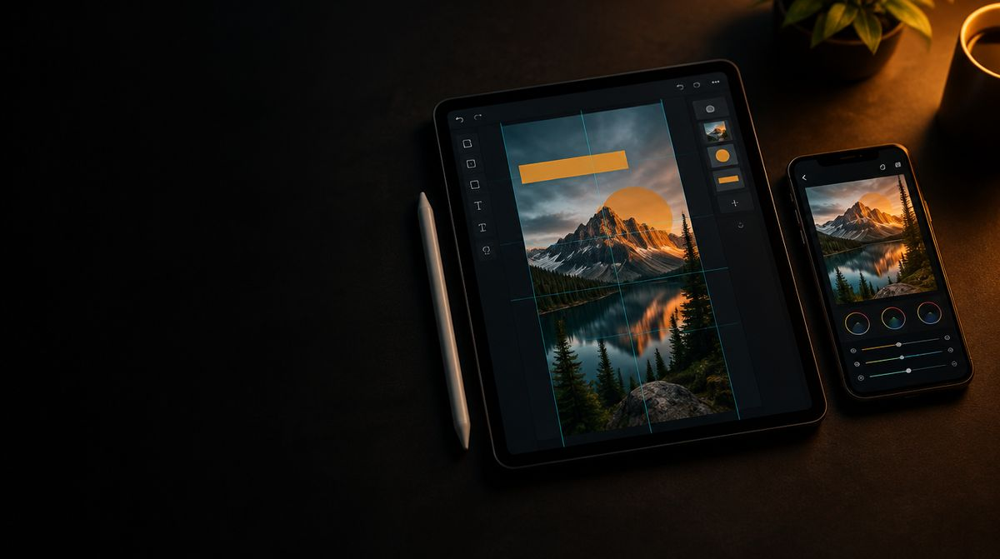
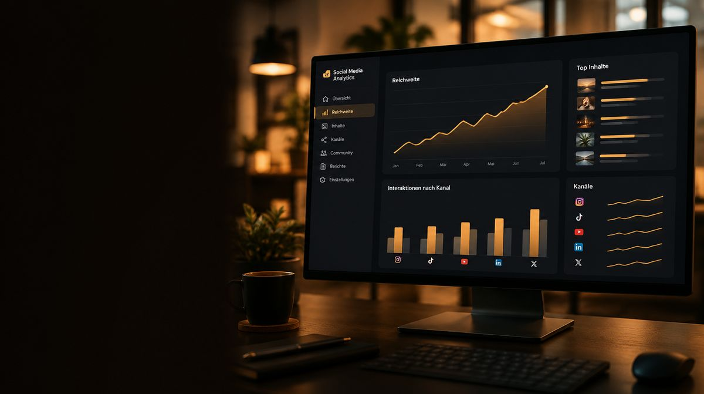

Social Media
Rhythmus schlägt Zufall.
Social Media braucht Themen, die zu eurem Angebot passen, und einen Rhythmus, den ihr durchhalten könnt. Wir verbinden Redaktionsplanung mit der vereinbarten Produktion von Reels, Fotos und Grafiken. Kanäle, Formate und Produktionsumfang richten sich nach euren Zielen.
Instagram, TikTok und LinkedIn stellen unterschiedliche Anforderungen an Inhalte und Ansprache. Wir stimmen die Formate auf die gewählten Kanäle ab. Wenn Community Management zum Auftrag gehört, legen wir Antwortzeiten und Zuständigkeiten gemeinsam fest.
Am Monatsende steht ein Bericht: Welches Format hat getragen, wo ist die Reichweite hergekommen, was streichen wir.
Typische Dauerlaufend, nach der Mindestlaufzeit monatlich kündbar
Was drin ist
Der Umfangim Überblick.
-
Redaktionsplan
Themen für den Monat, abgestimmt und freigegeben.
-

Instagram, TikTok und LinkedIn
Format und Ansprache je Kanal, mit eigenen Anforderungen.
-
Reels und Kurzvideo
Fester Drehtag, feste Abgabe, keine Hektik.
-

Foto und Grafik
Produktion im vereinbarten Takt, Foto wie Grafik.
-
Community Management
Teil der laufenden Betreuung, nicht nur veröffentlicht.
-

Monatsreport
Welches Format hat getragen, was streichen wir.
Welche Aufgabe soll Social Media übernehmen?
Produkte erklären, Einblicke in eure Arbeit geben, Bewerber erreichen oder eine Kampagne unterstützen: Jede Aufgabe verlangt andere Inhalte. Ein Redaktionsplan beginnt deshalb mit Themen und Zielgruppen. Die Anzahl der Beiträge ergibt sich daraus und aus dem Material, das ihr verlässlich liefern und freigeben könnt.
Für ein Unternehmen mit eigener Marketingabteilung kann die Strategie bereits stehen. Dann übernehmen wir abgegrenzte Aufgaben wie Drehen, Schneiden, Gestalten oder die Umsetzung einer Kampagne. Fehlt die laufende Betreuung, verbinden wir Themenplanung, Produktion und Veröffentlichung im vereinbarten Umfang.
Content, Betreuung und Werbung: drei eigene Aufgaben
- Content-Produktion
- Ideen und Vorbereitung, Foto- und Videoaufnahmen sowie die Ausarbeitung der vereinbarten Formate. Bei einem einzelnen Bedarf ist eine Produktion als Projekt möglich.
- Laufende Betreuung
- Redaktionsplanung, Abstimmung, Veröffentlichung und Auswertung. Für Kommentare und Nachrichten legen wir Zuständigkeiten, Antwortthemen und Eskalationswege fest. Fachliche oder sensible Fragen gehen an die zuständige Person in eurem Unternehmen.
- Bezahlte Kampagnen
- Anzeigen haben ein eigenes Ziel, eine Zielseite und ein separates Werbebudget. Ihre Betreuung wird mit dem organischen Auftritt abgestimmt. Mehr dazu unter Google und Meta Ads.
So wird aus einem Thema verwendbarer Content
Nehmen wir eine Produkteinführung als Planungsbeispiel. Das Thema liefert Fragen für ein erklärendes Video, Detailbilder für die Website und kurze Ausschnitte für Social Media. Vor der Aufnahme werden die benötigten Formate, Aussagen und Einsatzorte festgelegt. So wird beim Schnitt nicht erst sichtbar, dass eine Perspektive oder eine wichtige Aussage fehlt.
Der Redaktionsplan hält pro Beitrag fest: Ziel, Kernaussage, Format, benötigtes Material, Verantwortliche, Freigabe und Veröffentlichungstermin. Eure Ansprechperson prüft fachliche Aussagen. Wir kümmern uns um die vereinbarte Ausarbeitung. Änderungen werden gesammelt, damit mehrere Rückmeldungen nicht zu widersprüchlichen Fassungen führen.
Was zeigt, ob die Betreuung funktioniert?
Reichweite beschreibt, wie weit Inhalte verbreitet wurden. Sie beantwortet noch nicht, ob die richtigen Menschen das Angebot verstanden haben. Abhängig vom Ziel betrachten wir deshalb auch Reaktionen auf Inhalte, Besuche der passenden Zielseiten, relevante Gespräche oder zuordenbare Anfragen. Nicht jede Wirkung lässt sich einer einzelnen Veröffentlichung eindeutig zuschreiben.
Die Auswertung soll eine Entscheidung ermöglichen: Welche Themen vertiefen wir? Welche Formate lohnen die Produktionszeit? Wo fehlen verständliche Informationen? Ein Bericht ohne Konsequenz für den nächsten Redaktionsplan hilft wenig.
Content-Produktion als eigener Auftrag
Ein Film auf eurer Website, ein kurzer Social-Media-Beitrag und ein Werbemittel für eine Kampagne werden unterschiedlich genutzt. Vor der Produktion klären wir deshalb Zweck, Zielgruppe, Format und Platzierung. Erst daraus folgen Motive, Ablauf und die benötigten Varianten.
- Konzept und Vorbereitung
- Themen, Kernaussage, Motive, Ablauf und benötigte Personen oder Produkte planen. Zuständigkeiten und Freigaben gehören dazu.
- Foto und Video
- Material für die vereinbarten Anwendungen produzieren. Die spätere Verwendung entscheidet mit über Bildausschnitt, Länge, Ton und Format.
- Aufbereitung
- Auswahl, Schnitt, Untertitel und Formatvarianten entsprechend dem Auftrag vorbereiten.
- Übergabe
- Dateien so strukturieren, dass euer Team sie wiederfindet und einsetzen kann. Dateiformate, Nutzungsumfang und die Übergabe von Ausgangsmaterial müssen vorab vereinbart sein.
Eure Marketingabteilung kann Themen und Kampagnen vorgeben; wir übernehmen die spezialisierte Produktion. Wenn die inhaltliche Richtung noch offen ist, klären wir sie im Briefing. Erfahrung aus unterschiedlichen Brands hilft dabei, Perspektiven und Formate zu prüfen, ohne eure Markenidentität zu verwischen.
Ein Produktstart oder ein neuer Webauftritt lässt sich als Projekt planen. Für bezahlte Verbreitung stimmen wir Produktion und Kampagnenbetreuung aufeinander ab.
Wiederkehrende Aufgaben passen ins Marketing im Abo. Für eine einzelne Kampagne oder Produktion eignet sich Projektarbeit.
Auf ein Wort
Passt das zu
eurem Vorhaben?
Fünfzehn Minuten reichen für eine ehrliche Einschätzung, auch wenn am Ende nichts daraus wird.
Gespräch buchen- Ein Rhythmus, den ihr durchhalten könnt
- Themen, die zu eurem Angebot passen
- Fester Drehtag statt Hektik
- Formate auf die gewählten Kanäle abgestimmt
- Am Monatsende ein Bericht, was getragen hat
Häufige Fragen zur Social-Media-Betreuung
Ja. Der Auftrag kann auf bestimmte Kanäle oder Aufgaben begrenzt werden. Wichtig ist ein gemeinsamer Überblick über Themen, Termine und Freigaben, damit interne und externe Beiträge zusammenpassen.
Es gibt keinen für jedes Unternehmen passenden Takt. Entscheidend sind Ziel, Themenvorrat, Produktionsaufwand und die Kapazität zur Betreuung. Wir legen einen umsetzbaren Rhythmus fest und prüfen ihn anhand der Ergebnisse.
Plant Themenarbeit, Produktion, Bearbeitung, Veröffentlichungen und Betreuung ein. Bei Anzeigen kommen Werbeetat und Kampagnenarbeit hinzu. Umfangreiche Drehs oder zusätzliche Sprachversionen sind eigene Aufwandstreiber. Der Budget-Leitfaden hilft bei der vollständigen Planung. Welche Faktoren den Aufwand im Einzelnen bestimmen, erklärt unser Leitfaden Was kostet Social-Media-Betreuung?
Ja. Veröffentlichung und Betreuung lassen sich von der Produktion trennen. Welche Formate und Informationen euer Team für die Weiterverwendung braucht, klären wir vorab.
Das hängt von Motiven, Drehumfang, Formaten und Nachbearbeitung ab. Eine konkrete Liste der Ergebnisse ist aussagekräftiger als eine pauschale Anzahl. Sie gehört in die Offerte.